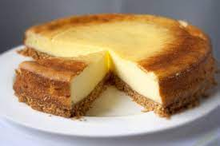

Sajttorta
A sajttorta egy újabb népszerű édesség. Sokan megijednek a sajt kifejezéstől, de nincs ok az aggodalomra! A sajttorta kellemesen édes és lágy, az alapja pedig a minőségi krémsajt, amid kedvünkre édesítünk, ízesítünk. Amerikában nagyon népszerű.

Hozzávalók
- 38 dkg teljes kiőrlésű keksz
- 15 dkg vaj
- 65 dkg natúr krémsajt
- 15 dkg cukor
- 1.5 ek liszt
- 1 dl tejföl
- 1 csomag vaníliás cukor
- 1 db citrom
- 3 db tojás
Elkészítés
- A sajttorta elkészítéséhez a kekszet durvára daráljuk, és összekeverjük a felolvasztott vajjal.
- Egyenletesen belenyomkodjuk egy 24 cm átmérőjű kapcsos tortaformába, és 165 fokra előmelegített sütőben (gázsütőn 3-as fokozat) 5 perc alatt aranybarnára sütjük. Kivesszük a sütőből, és hagyjuk kihűlni.
- Kézi robotgéppel simára dolgozzuk a sajtkrémet a cukorral, a liszttel és a tejföllel. Ezután belekeverjük a vaníliás cukrot, belereszeljük a citrom héját, majd egyenként hozzákeverjük a tojásokat. További 2-3 percig keverjük, és amikor a keverék sima és habos, ráöntjük a kihűlt tortaalapra.
- A tortát visszatoljuk a 165 fokos sütőbe, és 45 percig sütjük (amíg barna lesz a teteje).
- Az elkészült sajttortát tálaláskor késsel körbevágjuk, kiszedjük a formából, és a tetejét megszórhatjuk porcukorral.